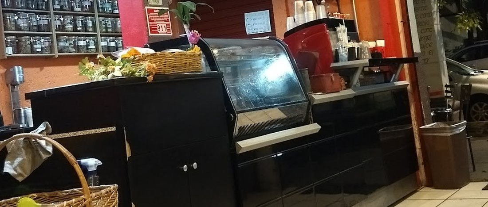
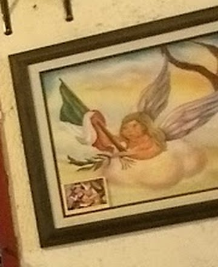
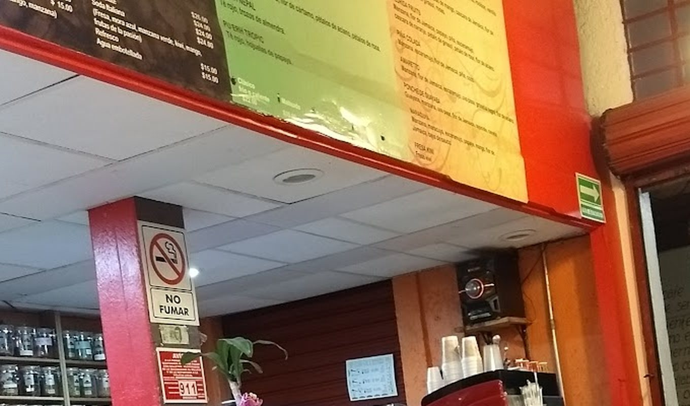

Hoy en la pizarra
- Café de olla de la casa
- Chilaquiles verdes o rojos
- Molletes con pico
- Pan dulce del día de la charola
El menú del día se escribe cada mañana. Pregunta por el guisado antes de sentarte.
Un café de barrio con pizarrones escritos a mano, cuadros en la pared y la barra siempre ocupada. Aquí se desayuna, se come y se platica sin mirar el reloj.
4.3 en Google · 532 reseñas · Ing. Carlos Daza 202
El menú del día se escribe cada mañana. Pregunta por el guisado antes de sentarte.
Un local pequeño sobre Ing. Carlos Daza: muros salmón, marcos rojos, frascos en la repisa y cuadros que han ido llegando con los años. Los pizarrones del menú ocupan la pared de arriba.
La banqueta tiene árboles y luces; las mesas de adentro son para la comida y la sobremesa. No hay prisa: el café se sirve y la charla sigue.


Estamos en Guadalupe Insurgentes, a unos minutos de Plaza Lindavista. Escríbenos para pedir para llevar o preguntar por el menú de hoy.
Ing. Carlos Daza 202
Guadalupe Insurgentes, Gustavo A. Madero, 07870

“Lo del día se escribe en la pizarra.”
Un café de olla, el guisado del día y una sobremesa que se alarga. Así es un martes aquí.